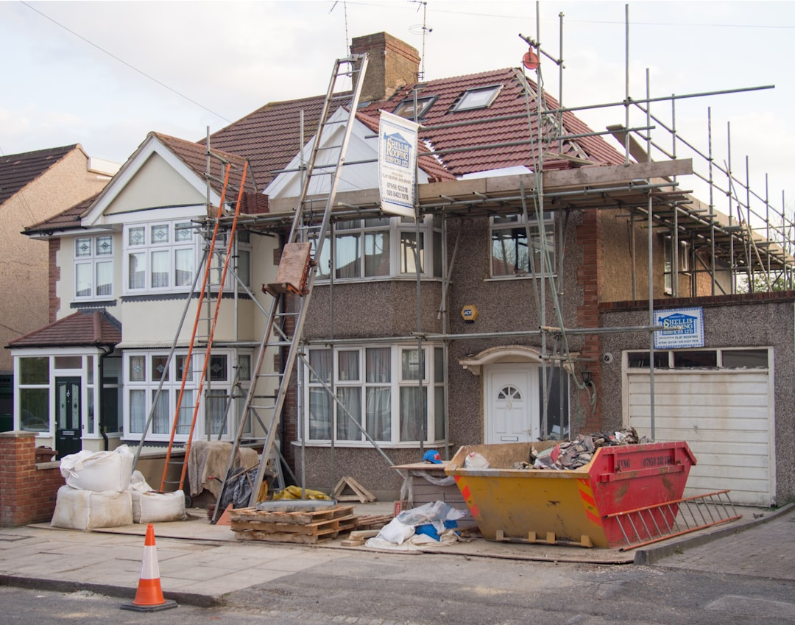

The cost of a Brisbane home extension is driven by the type of addition, the size and structure of the work, and the level of finish, not by a single fixed price. Ground-floor room additions, granny flats and second-storey additions each carry different budgets, and structural work such as a raise and build-under sits at the top of the range. Council approval, site access and the age of the home all move the number. Extensions that alter the building footprint or structure usually need a Building Permit, and character or Queenslander homes add heritage and timber considerations. Treat published figures as general industry guidance and confirm scope with a QBCC licensed builder before committing.
For local buyers, brisbane home extension cost covers the main types of addition, the factors that move the budget, the approvals involved and who should plan for this kind of project
Brisbane Home Extension Cost Explained
An extension is not a single product with a single price. The figure that matters for your project depends on what you are adding, how big it is, whether the work is structural and how the home is finished at the end. A modest ground-floor room addition and a full second-storey addition sit at very different points on the scale, even on the same block. That is why an honest builder quotes on the specific design rather than a headline rate.
The brand context for this niche puts a typical house extension starting from around $150,000, with larger structural projects such as a raise and build-under starting materially higher. Treat those as general industry guidance rather than a quote. The reliable way to understand where your project lands is to compare it against the wider picture of overall Brisbane renovation costs, then narrow to the addition type that fits your home.
Brisbane sits in a busy renovation market, and demand for skilled trades has stayed strong across the city. That matters for budgeting because a competitive market can lengthen lead times and firm up prices for popular build types. It is another reason to plan early, lock your scope before you seek quotes, and avoid comparing your project to a job priced in a quieter year. The number that counts is the one attached to your design, your block and today's material and labour rates.
The main types of addition and how they compare
Most Brisbane additions fall into a handful of recognisable categories, each with its own cost logic:
- Ground-floor room additions extend the existing footprint outward, often for a larger living area, extra bedroom or expanded kitchen.
- Granny flats and secondary dwellings add a self-contained space, useful for family or a separate studio, and carry their own services and approval path.
- Second-storey additions build upward, adding significant living space without consuming more land, but they involve engineering, access and structural reinforcement.
- Raise and build-under lifts a classic Queenslander to create habitable space beneath, a heritage-aware approach that sits at the upper end of the budget.
Because these differ so much in structure, they differ in price. Adding an outdoor space is a lighter-touch alternative worth weighing up: adding an outdoor deck can extend usable living area for a fraction of the cost of enclosing new floor space, which is why many owners stage a deck first and a full extension later.
The factors that move the budget
Two extensions of the same floor area can price differently once the detail is understood. The main drivers are consistent across Brisbane projects:
- Structural complexity. Work that alters load paths, adds a storey or lifts a home needs engineering and reinforcement, which lifts the cost well above a simple footprint extension.
- Site access and slope. Tight blocks, difficult access and sloping ground add time and labour.
- Level of finish. Fixtures, cabinetry, flooring and joinery choices can swing the final figure substantially for the same footprint.
- Home age and condition. Older and character homes may need timber restoration, rewiring or bringing existing structure up to current standards.
- Services. Extending plumbing, electrical and drainage into new space adds cost that a cosmetic refresh never touches.
Material and labour prices have risen across the sector in recent years, so a figure quoted for a past project is not a safe guide to a current one. A written, itemised quote from a licensed builder is the only figure to rely on.
Approvals, permits and timelines
Extensions almost always change the building footprint or structure, which means they usually require a Building Permit rather than being treated as an internal-only renovation. Work in a heritage overlay carries additional approval steps, which is common for character homes in older Brisbane suburbs. As a general guide, council approval can take anywhere from around two to eight weeks depending on complexity, and it is one of the reasons a full-scope addition can run across many months once design, documentation and construction are added together.
Building a realistic timeline early prevents budget surprises. Feasibility and design come first, then documentation and approval, then construction. A single point of contact who handles the approval path, engaging a building certifier where needed, keeps the sequence moving. This is general information only; confirm the specific approval requirements for your address with your builder or a building certifier before you commit funds.
It also helps to plan for the practical side of living through a build. Extensions that open up walls or add a storey can affect access to parts of the home, so agree the staging with your builder up front. Clear expectations on the program, the payment schedule tied to progress, and how variations are handled will keep the project on track and protect the budget you set at the start.
Who should plan for an extension
An extension suits owners who want more space without the cost and disruption of moving, and it is a common choice where a home is well located but has outgrown the family. The planning discipline below applies whether you are extending a modern home or a classic Queenslander:
- Growing families needing an extra bedroom, bathroom or larger living zone.
- Owners of character homes considering a raise and build-under to unlock ground-level space.
- Households wanting a granny flat for family, guests or a home studio.
- Homeowners weighing a lighter-touch outdoor addition against a full enclosed extension.
Whatever the addition, the process is the same: define the scope, understand where it sits against typical figures, confirm the approvals, and get an itemised quote from a QBCC licensed builder. For the broader budgeting picture across every room and project type, the parent guide to Brisbane renovation costs is the sensible next read.
- Define the addition. Decide whether you are adding a room, a granny flat, a second storey or lifting the home.
- Set the scope and finish. Fix the size and the level of finish, since both move the budget more than floor area alone.
- Check the approvals. Confirm whether a Building Permit and any heritage overlay approval apply to your address.
- Benchmark the figure. Compare your plan against general renovation cost guidance before you request quotes.
- Get an itemised quote. Engage a QBCC licensed builder for a written, itemised quote on your specific design.
| Addition type | What it does | Relative budget |
|---|---|---|
| Ground-floor room addition | Extends the existing footprint outward | Lower to mid |
| Granny flat / secondary dwelling | Adds a self-contained space with own services | Mid |
| Second-storey addition | Adds living space upward, no extra land | Mid to high |
| Raise and build-under | Lifts a Queenslander to create space below | High |
Common questions
How much does a home extension cost in Brisbane? There is no single price. A house extension typically starts from around $150,000 as general industry guidance, with structural projects such as a raise and build-under starting materially higher. The real figure depends on the addition type, size, finish and approvals, so an itemised quote from a licensed builder is the only reliable number.
Do I need council approval for a home extension? Usually yes. Extensions that alter the building footprint or structure generally require a Building Permit, and properties in a heritage overlay need additional approval. Council approval commonly takes around two to eight weeks depending on complexity. Confirm the requirements for your address with a builder or building certifier.
Is a second-storey addition more expensive than extending outward? Generally, structural additions such as a second storey or a raise and build-under cost more than a simple ground-floor room addition, because they involve engineering, access and reinforcement. The right choice depends on your block, your budget and how much land you want to keep.
This guide covers what drives the cost of a Brisbane home extension, the main types of addition, the factors that move the budget, the approvals involved and who should plan for this kind of project.